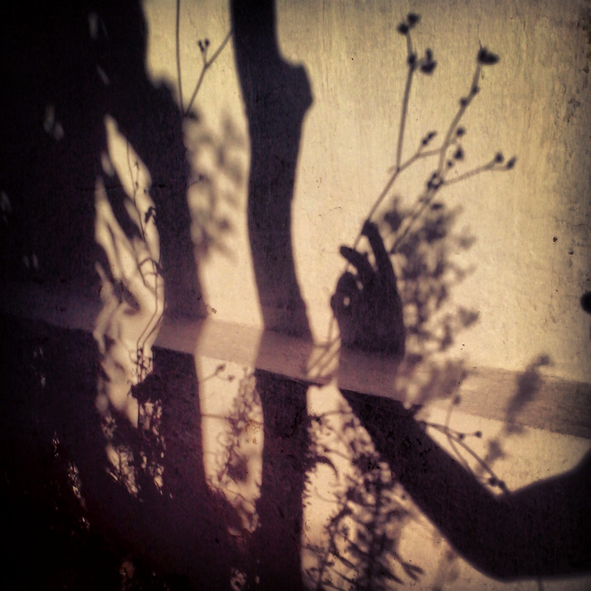

I am cat mom, vegetarian and sapiosexual. I love drawing, snowboarding and coding. I love a lot of big and little things!
For example, I love everything connected with pines, like, living near the pines, watching the pines in different seasons, smelling pines, eating pine cones' jam. Yumm.
Sometimes I love to roar or hiss like a serval or a mountain lion. Big cats are so much fun!
Small cats as well, of course.
